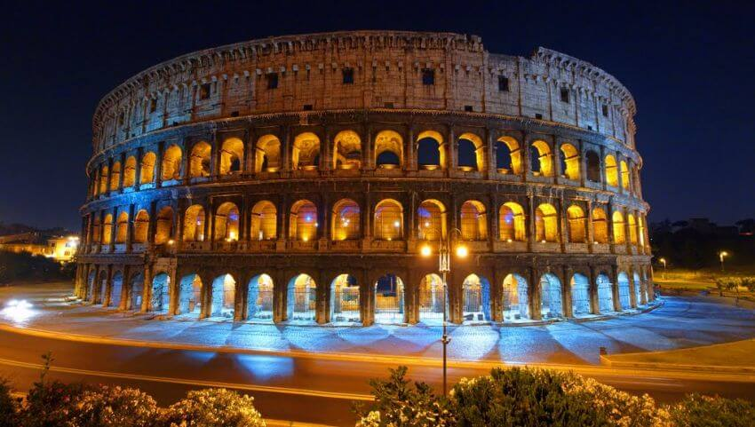
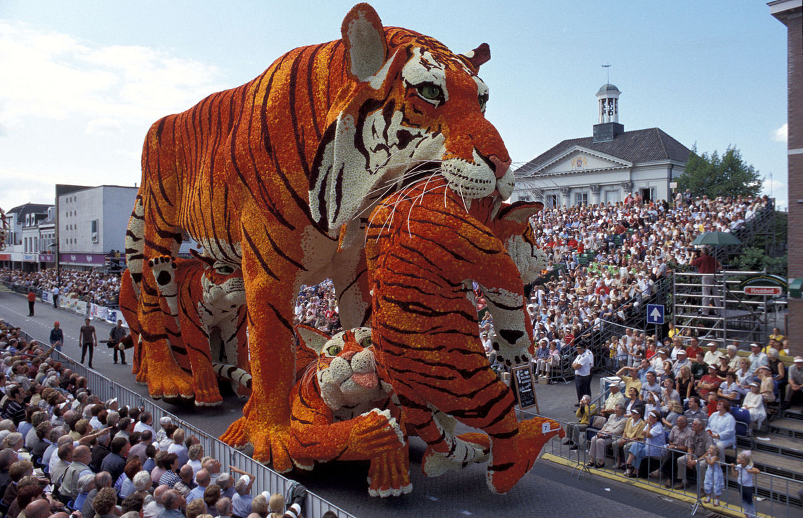

Pek çok insan hayatı boyunca dünya üzerinde kesinlikle görülmesi ve yaşanması gereken yerlerde bulunmak ister. İnsanoğlunun doğasında olan “bilinmeyeni bilme ve keşfetme isteği” çoğu insanın dünya üzerindeki turistik mekanları hayatında bir kez görme isteği barındırır. Eğer siz de seyahate düşkün biriyseniz ya da Dünya turu için doğru yerleri keşfetmek istiyorsanız işte Dünya'da mutlaka görmeniz gereken en güzel yerleri sizler için derledik.
Roma Collesiumu-İtalya
Yüzyıllarca Dünya'nın kalbi olarak nitelendirilen Roma'nın gezilecek yerleri, tarihi yapıları, Roma Collesiumu, Pisa Kulesi gibi pek çok turistik ögesiyle adeta tarihi bir müze. Sizler de bu güzide şehri ziyaret ederek bir müzede geziyormuş hissine kapılabilir, değerli anılar biriktirebilirsiniz.
Peru'nun ev sahipliği yaptığı, günümüze kadar özenle korunan bir İnka antik kenti olan Machu Pichu, And Dağlarının zirvesinde yer alır. Zamanında İspanyollar bu kenti çok arasalar da bulamamışlar ve bu sayede Machu Pichu hiçbir zarara maruz kalmadan günümüze ulaşmış ve Dünya Kültür Mirası listesinde yer edinmiştir. Aynı zamanda Dünya'nın 7 harikasında biri olan bu harika antik kenti mutlaka görmelisiniz.
Machu Picchu-Peru
Mısır Piramitleri-Mısır
Dünya'daki en büyük ve en eski anıt-mezarların bulunduğu Mısır Piramitleri'nden en büyük olan Keops Piramidi görüntüsü itibariyle de Dünya'nın birinci halkası olmayı hak etmiştir. Firavunların mumyasının bulunduğu piramitlerde birbirinden değerli sanat eserleri, kraliçe, kral ve prensin heykellerini de barındırmaktadır. Bugün gizemleri, efsaneleri ve hazineleri ile Dünya'daki kilit noktalardan biri haline gelmiştir.
Bir İngiliz lordu olan Edward Lear “Dünyada insanlar ikiye ayrılır: Tac Mahal’i görenler ve görmeyenler” demiş. Gerçekten öyle güzel, göreni öyle ayrıcalıklı hissettiren, şiir gibi bir bina. Dünyanın yeni 7 harikasından biri ve şüphesiz Hindistan denince ilk akla gelen yer. “Hindistan’daki Müslüman sanatın mücevheri ve dünya mirasının evrensel başyapıtlarından biri” olarak 1983’ten beri UNESCO Dünya Kültür Mirası Listesi’nde yer alıyor.
Tac Mahal-Hindistan
Çin Seddi-Çin
Çin Seddi, Çin'in kuzeybatısı boyunca uzanan, Dünyanın en uzun savunma duvarıdır. Kalıntıları Po Hay körfezinde deniz kıyısında başlar. Pekin'in kuzeyinden geçerek batıya yönelir ve Huang-Ho nehrini ikiye bölerek güneybatıya uzanır. Gobi Çölü'nün güneyinden batıya yönelerek devam eder. Seddin yıkılmış olan kısımlarıyla birlikte uzunluğu 8851,8 kilometredir. Bugün ayakta duran kısım Ming Hanedanı devrinden kalan 2.500 kilometrelik settir. Ancak asıl inşaat, MÖ 221 ile MS 608 yılları arasında yapılmıştır. Bir diğer arkeolojik araştırmaya göre tüm kollarıyla birlikte toplam 21.196 km uzunluğa sahiptir.
Ayrıca Bakınız
San Fermin Festivali - İspanya
İspanya’nın geleneksel kutlamalarından olan San Fermin Festivali denildiğinde ilk akla gelen boğaların sokaklarda koşması olsa da aslında organizasyon oldukça geniş kapsamlı etkinliklere ev sahipliği yapıyor. 6 - 14 temmuz tarihlerinde gerçekleşen bu festivalde boğaların koşması sırasında kazalar ve yaralanmalar söz konusu olabiliyor. Katılımcılara özellikle dikkatli olmaları konusunda bilgi veriliyor. San Fermin’e katılım ücretsiz ancak bazı etkinlikler ekstra ücretli olabiliyor.
Bloemencorso festivali - Hollanda
Yüzyıllarca Dünya'nın kalbi olarak nitelendirilen Roma'nın gezilecek yerleri, tarihi yapıları, Roma Collesiumu, Pisa Kulesi gibi pek çok turistik ögesiyle adeta tarihi bir müze. Sizler de bu güzide şehri ziyaret ederek bir müzede geziyormuş hissine kapılabilir, değerli anılar biriktirebilirsiniz.
MY WORLD
Vizesiz gidilebilecek ülkeler
- Makedonya
- Ukrayna
- Kosova
- Arnavutluk
- Sırbistan
- Kuzey Kıbrıs
- Bosna-Hersek